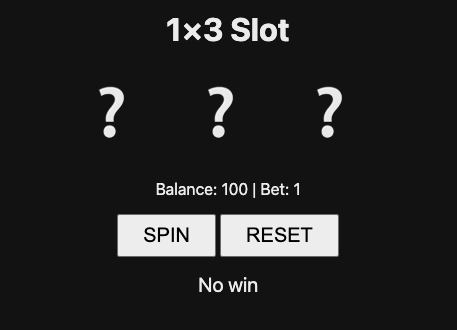
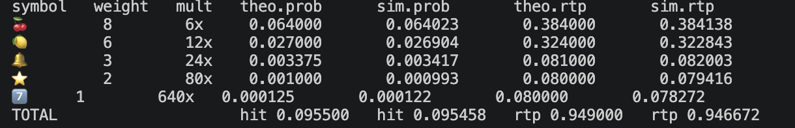
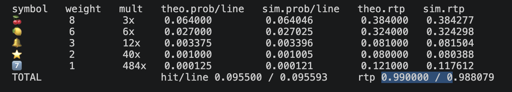

Chapter 5 Skill — 按需載入的「能力包」
⏱ 預估 8 分鐘讀完,加上小練習共 20 分鐘
💡 一句話講完
Skill 是一包平常不佔 context、需要時才載入的指示與能力。跟前兩章對照:CLAUDE.md 永遠在場(軟性建議)、Hook 到點硬觸發、Skill 則是按需叫用——用得到才把它的完整內容拉進來。
為什麼需要它:接續前面的脈絡
Chapter 3 說過,CLAUDE.md 的內容永遠塞在 context 裡。東西越加越多,context 就越肥、越貴、越容易失焦。但很多「能力」其實大部分時間用不到——例如「做 code review 的完整流程」「研究報告的產法」,只有偶爾才需要。
Skill 就是這個問題的解法:平常只放一行 description 讓 Claude 知道「有這個能力存在」,真正的詳細指示等到用得上時才載入。這種「先給目錄、要用才翻內文」的設計叫 progressive disclosure(漸進式揭露),核心目的就是省 context。
Skill 是什麼:一個資料夾 + 一份 SKILL.md
一個 skill 最小就是一個資料夾,裡面放一份 SKILL.md:
my-skill/
└── SKILL.md ← frontmatter(name + description) + 內文指示
(可選)scripts/ ← 附帶的腳本、範本、資源SKILL.md 開頭是 frontmatter,只有兩個關鍵欄位:
| 欄位 | 作用 | 何時被讀 |
|---|---|---|
name | skill 的名字(也是 / 叫它的名字) | 平常就載入(輕量清單) |
description | 一句話講「這在幹嘛、何時該用」 | 平常就載入,Claude 靠它判斷要不要用 |
| 內文(frontmatter 以下) | 真正的詳細指示、步驟、規則 | 被觸發時才載入 |
⚠️ description 是 skill 的命脈
因為 Claude 平常只看得到 description,所以它寫得好不好,直接決定這個 skill 會不會在對的時機被自動叫出來。description 模糊 → skill 形同隱形。
怎麼被觸發(兩種)
- 自動觸發:Claude 看你的任務,比對各 skill 的
description,自己判斷「這次用得上」就載入並執行。你不用做任何事。 - 手動觸發:你直接打
/skill-name叫它。
對照:CLAUDE.md vs Hook vs Skill
| 怎麼「在場」 | 怎麼觸發 | 本質 | |
|---|---|---|---|
| CLAUDE.md | 永遠在 context | 不用觸發,一直都在 | 軟性建議(不保證遵守) |
| Hook | 不在 context | 生命週期事件點,到點一定跑 | 硬性程式(一定執行) |
| Skill | 平常只有 description 在 | 自動(Claude 判斷)或手動(/) |
按需載入的能力包 |
🛠 小練習:建一個最小 skill,看它「自動觸發」
步驟
- clone 測試專案
- 先看一下當前的遊戲畫面以及RTP的驗證結果
- 輸入
- 建好後,輸入
/new-game-from-spec並告訴他你企劃書及機率計算的檔案new-game-from-spec(手動觸發的入口): - 再次檢視遊戲畫面及RTP的驗證結果
git clone https://github.com/business20250626-sudo/claude-cli-demo.gitmake web
本來的遊戲畫面
make verify
本來的驗證 RTP 畫面
幫我寫一個skill名字叫new-game-from-spec,內容是當我給與企劃書及機率的計算資料後,你要根據這兩個新的內容下去修改現有程式碼,變成這款新的遊戲/new-game-from-spec 請參照docs底下的企劃書.md及機率計算.xlsxmake web新的遊戲畫面
make verify
新的驗證 RTP 畫面
練習目的
- 親手看到 skill 的最小結構(資料夾 +
SKILL.md+ frontmatter) - 體驗自動觸發:沒打
/,Claude 靠description自己叫出 skill - 對照 progressive disclosure:平常只有 description 在場,用到才載入內文
✅ 走完 Chapter 5 你要能...
- 說出 skill 是什麼(按需載入的能力包),以及它跟 CLAUDE.md / Hook 的差別
- 講出 progressive disclosure:平常只載
description,用到才載入內文,目的是省 context - 說出 skill 的最小結構(資料夾 +
SKILL.md,frontmatter 的name/description) - 講出兩種觸發:自動(Claude 看 description 判斷)vs 手動(打
/)